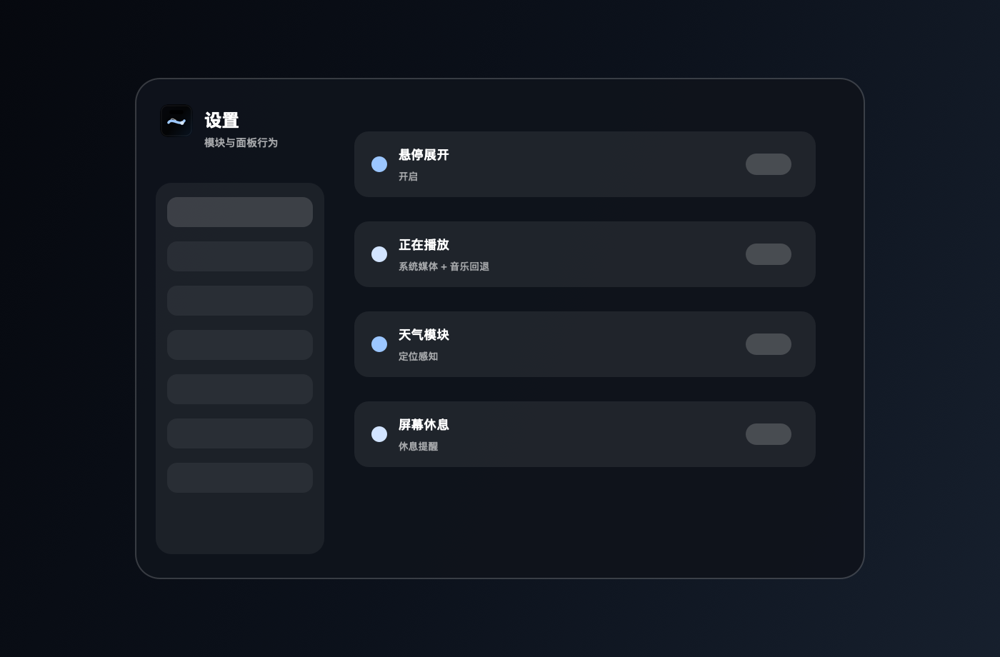

安装
预览版，四步启动。
v0.1.0 目前为本地签名 zip 包，正式公证安装包仍在后续计划中。
-
01
下载
从最新 GitHub 发布页获取
NotchFlow-v0.1.0-macOS.zip。 -
02
移动
解压后把
NotchFlow.app放入/Applications。 -
03
打开
如果 macOS 首次拦截，请右键应用并选择 打开。
-
04
授权
仅为需要的模块授权，例如定位、自动化或媒体控制。
